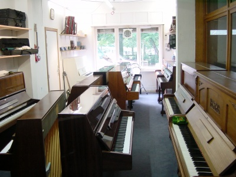
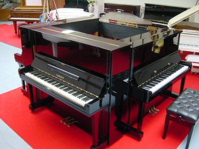

Bienvenue chez Crazy-Piano
l'univers du piano en Belgique !
Située à Bruxelles, Crazy-Piano c'est tout l'univers du piano qui vous est offert pour le plaisir de vos yeux et de vos oreilles dans un espace de 1.000 m² dont 600 m² de showroom et 400 m² d'atelier.Grâce à nos 30 années d'expérience, chez Crazy-Piano nous sommes en mesure de vous offrir des services de qualité pour que votre piano donne toujours le meilleur de lui-même.
C'est dans son atelier de 400m2 que Crazy-Piano chouchoute les pianos pour leur permettre de toujours donner le meilleur d'eux-mêmes pour votre plaisir à vous musicien mais aussi à vous spectateur qui appréciez le son agréable et mélodieux que dégage ce merveilleux instrument.

|

|

|
|  |  |
Achat, vente de pianos neufs ou d'occasion, accordage, restauration, réparation toutes marques, déplacement à domicile et livraison, avec Crazy-Piano, bénéficiez de prestations de qualité assurées part notre équipe d'experts passionnés.
Si vous souhaitez en savoir plus sur Crazy-Piano, n'hésitez pas à nous contacter !
Bonne visite à touss !